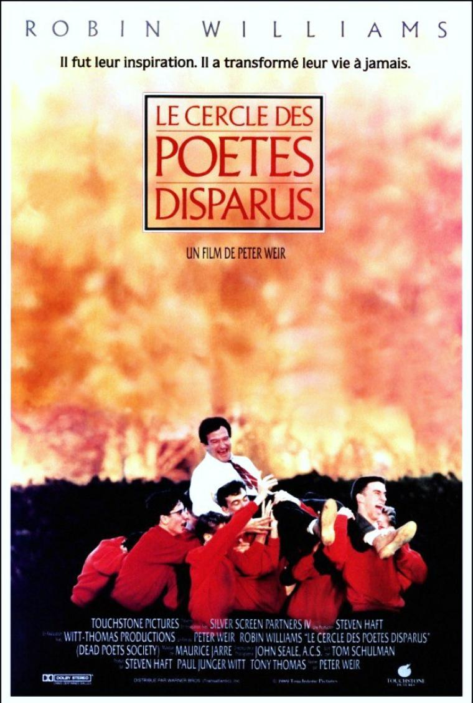
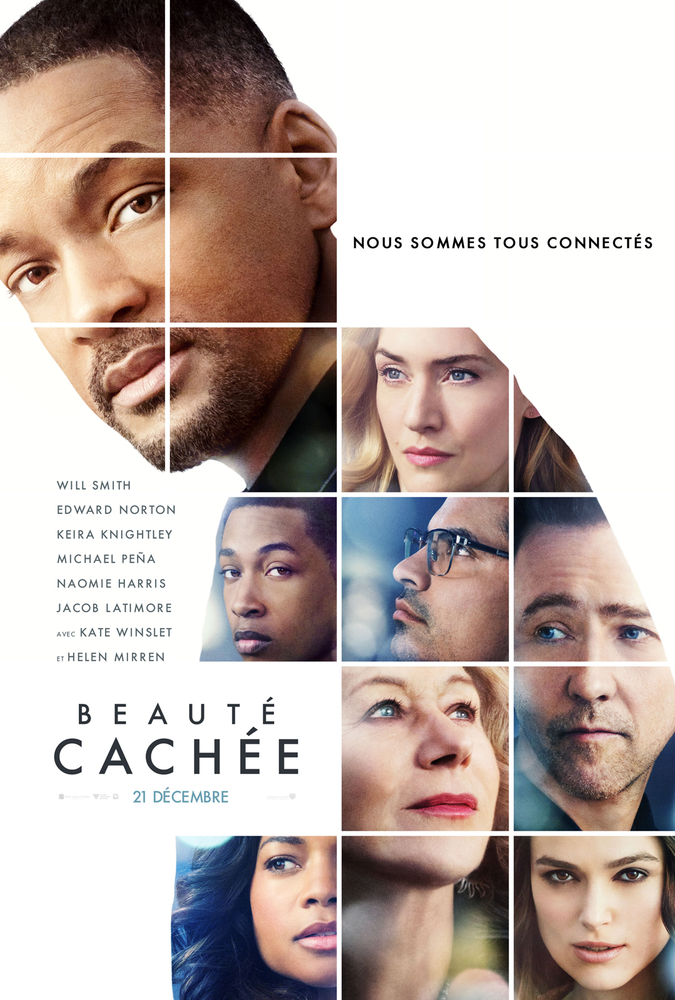
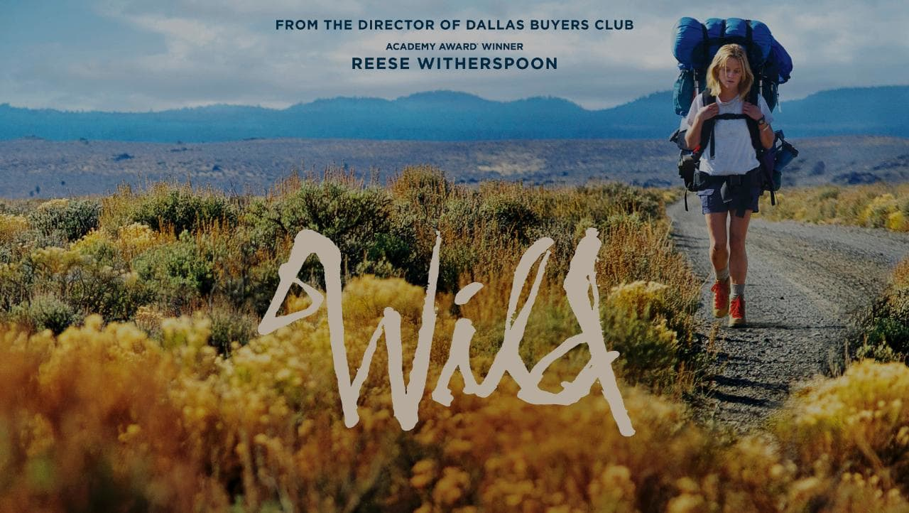
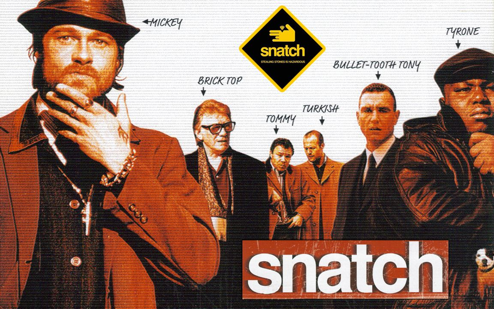

After 9 years in databases admin, I got bored and decided to travel and do everything I want to do and learn new skills like Ruby on Rails. My credos ! Fall down seven times, stand up eight ! & Le front c'est pas mon truc :) ! & Seize the day !
|  |
Dead Poets SocietyDead Poets Society is a 1989 American drama film directed by Peter Weir, written by Tom Schulman, and starring Robin Williams. Set in 1959 at the fictional elite conservative Vermont boarding school Welton Academy,[4] it tells the story of an English teacher who inspires his students through his teaching of poetry.. |
|  |
Collateral BeautyCollateral Beauty is a 2016 American drama film directed by David Frankel and written by Allan Loeb. The film stars an ensemble cast of Will Smith, Edward Norton, Keira Knightley, Michael Peña, Naomie Harris, Jacob Latimore, Kate Winslet, and Helen Mirren. It follows a man who copes with his daughter's death by writing letters to time, death, and love. |
|  |
WildWild is a 2014 American biographical survival drama film directed by Jean-Marc Vallée. The screenplay by Nick Hornby is based on Cheryl Strayed's 2012 memoir Wild: From Lost to Found on the Pacific Crest Trail. The film stars Reese Witherspoon as Strayed, alongside Laura Dern (as Strayed's mother), with Thomas Sadoski, Michiel Huisman and Gaby Hoffmann among several others in supporting roles. The film premiered at the Telluride Film Festival on August 29, 2014, and was released theatrically on December 3, 2014, in North America. |
|  |
SnatchSnatch (stylised as snatch.) is a 2000 British crime comedy film written and directed by Guy Ritchie, featuring an ensemble cast. Set in the London criminal underworld, the film contains two intertwined plots: one dealing with the search for a stolen diamond, the other with a small-time boxing promoter (Jason Statham) who finds himself under the thumb of a ruthless gangster (Alan Ford) who is ready and willing to have his subordinates carry out severe and sadistic acts of violence. |